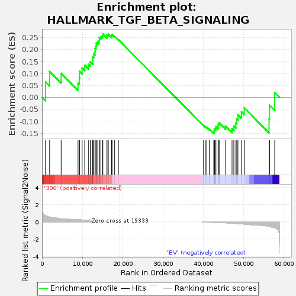
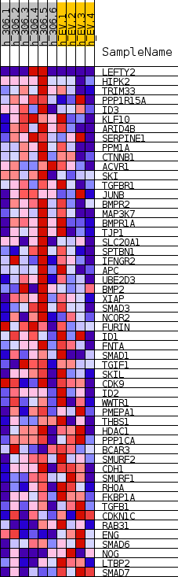
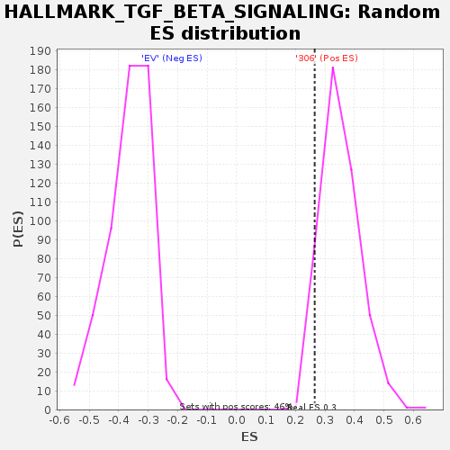

| | | Dataset | 306_EV_express.306_EV.cls#306_versus_EV |
| Phenotype | 306_EV.cls#306_versus_EV |
| Upregulated in class | 306 |
| GeneSet | HALLMARK_TGF_BETA_SIGNALING |
| Enrichment Score (ES) | 0.2649893 |
| Normalized Enrichment Score (NES) | 0.7521343 |
| Nominal p-value | 0.95661604 |
| FDR q-value | 1.0 |
| FWER p-Value | 1.0 |
Table: GSEA Results Summary

Fig 1: Enrichment plot: HALLMARK_TGF_BETA_SIGNALING
Profile of the Running ES Score & Positions of GeneSet Members on the Rank Ordered List
| SYMBOL | TITLE | RANK IN GENE LIST | RANK METRIC SCORE | RUNNING ES | CORE ENRICHMENT | | 1 | LEFTY2 | NNN | 858 | 0.704 | 0.0644 | Yes |
| 2 | HIPK2 | NNN | 1886 | 0.549 | 0.1085 | Yes |
| 3 | TRIM33 | NNN | 4737 | 0.359 | 0.1002 | Yes |
| 4 | PPP1R15A | NNN | 8919 | 0.265 | 0.0588 | Yes |
| 5 | ID3 | NNN | 9226 | 0.251 | 0.0818 | Yes |
| 6 | KLF10 | NNN | 9283 | 0.250 | 0.1088 | Yes |
| 7 | ARID4B | NNN | 9939 | 0.224 | 0.1228 | Yes |
| 8 | SERPINE1 | NNN | 10581 | 0.200 | 0.1343 | Yes |
| 9 | PPM1A | NNN | 11552 | 0.174 | 0.1374 | Yes |
| 10 | CTNNB1 | NNN | 11966 | 0.161 | 0.1484 | Yes |
| 11 | ACVR1 | NNN | 12569 | 0.145 | 0.1544 | Yes |
| 12 | SKI | NNN | 12584 | 0.144 | 0.1703 | Yes |
| 13 | TGFBR1 | NNN | 12833 | 0.138 | 0.1816 | Yes |
| 14 | JUNB | NNN | 13112 | 0.130 | 0.1914 | Yes |
| 15 | BMPR2 | NNN | 13153 | 0.129 | 0.2051 | Yes |
| 16 | MAP3K7 | NNN | 13369 | 0.123 | 0.2153 | Yes |
| 17 | BMPR1A | NNN | 13469 | 0.121 | 0.2271 | Yes |
| 18 | TJP1 | NNN | 13820 | 0.112 | 0.2337 | Yes |
| 19 | SLC20A1 | NNN | 14165 | 0.104 | 0.2395 | Yes |
| 20 | SPTBN1 | NNN | 14203 | 0.103 | 0.2504 | Yes |
| 21 | IFNGR2 | NNN | 14584 | 0.094 | 0.2545 | Yes |
| 22 | APC | NNN | 14995 | 0.085 | 0.2570 | Yes |
| 23 | UBE2D3 | NNN | 15076 | 0.083 | 0.2650 | Yes |
| 24 | BMP2 | NNN | 16096 | 0.065 | 0.2550 | No |
| 25 | XIAP | NNN | 16097 | 0.065 | 0.2623 | No |
| 26 | SMAD3 | NNN | 16435 | 0.063 | 0.2636 | No |
| 27 | NCOR2 | NNN | 17240 | 0.045 | 0.2550 | No |
| 28 | FURIN | NNN | 17302 | 0.044 | 0.2589 | No |
| 29 | ID1 | NNN | 17343 | 0.043 | 0.2630 | No |
| 30 | FNTA | NNN | 18001 | 0.030 | 0.2553 | No |
| 31 | SMAD1 | NNN | 18927 | 0.011 | 0.2407 | No |
| 32 | TGIF1 | NNN | 40031 | -0.008 | -0.1174 | No |
| 33 | SKIL | NNN | 40474 | -0.019 | -0.1228 | No |
| 34 | CDK9 | NNN | 40824 | -0.026 | -0.1259 | No |
| 35 | ID2 | NNN | 41481 | -0.039 | -0.1327 | No |
| 36 | WWTR1 | NNN | 42571 | -0.062 | -0.1442 | No |
| 37 | PMEPA1 | NNN | 42707 | -0.065 | -0.1392 | No |
| 38 | THBS1 | NNN | 42721 | -0.065 | -0.1321 | No |
| 39 | HDAC1 | NNN | 43041 | -0.072 | -0.1295 | No |
| 40 | PPP1CA | NNN | 43100 | -0.073 | -0.1223 | No |
| 41 | BCAR3 | NNN | 43639 | -0.086 | -0.1218 | No |
| 42 | SMURF2 | NNN | 43674 | -0.086 | -0.1127 | No |
| 43 | CDH1 | NNN | 43893 | -0.092 | -0.1061 | No |
| 44 | SMURF1 | NNN | 45488 | -0.114 | -0.1204 | No |
| 45 | RHOA | NNN | 47093 | -0.154 | -0.1305 | No |
| 46 | FKBP1A | NNN | 47536 | -0.167 | -0.1193 | No |
| 47 | TGFB1 | NNN | 48036 | -0.183 | -0.1073 | No |
| 48 | CDKN1C | NNN | 48259 | -0.190 | -0.0898 | No |
| 49 | RAB31 | NNN | 48547 | -0.201 | -0.0721 | No |
| 50 | ENG | NNN | 49440 | -0.237 | -0.0607 | No |
| 51 | SMAD6 | NNN | 50122 | -0.255 | -0.0438 | No |
| 52 | NOG | NNN | 56265 | -0.517 | -0.0903 | No |
| 53 | LTBP2 | NNN | 56373 | -0.531 | -0.0326 | No |
| 54 | SMAD7 | NNN | 57673 | -0.663 | 0.0197 | No |
Table: GSEA details [plain text format]

Fig 2: HALLMARK_TGF_BETA_SIGNALING
Blue-Pink O' Gram in the Space of the Analyzed GeneSet

Fig 3: HALLMARK_TGF_BETA_SIGNALING: Random ES distribution
Gene set null distribution of ES for HALLMARK_TGF_BETA_SIGNALING